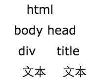

JS DOM操作入门
1. 什么是DOM
什么叫DOM，DOM是文档对象模型(Document Object Model，是基于浏览器编程（在本教程中，可以说就是DHTML编程）的一套API接口，W3C出台的推荐标准，每个浏览器都有一些细微的差别，其中以Mozilla的浏览器最与标准接近。单纯的Javascript要结合DOM才能做DHTML编程，才能做出漂亮的效果、应用于WEB。这点几乎与其它的语言无异，正如C/C++需要库支持是一样的道理。否则就是单纯的在语法上做研究了。
因此，必须要对DOM有一定的认识，才能把Javascript应用于WEB，或你的RIA应用当中，因为DHTML本质上就是操作DOM树。
<script>
var isSupportDOM = !!document.getElementById; //两个取反，这已经在上节中说过了，意思是强制转型
alert("你的浏览器 " +(isSupportDOM?"":"不")+ "支持 DOM！");
</script>2. DOM树
要注意：DOM树的根统一为文档根—document，DOM既然是树状结构，那么他们自然有如下的几种关系:
- 根结点(document)
- 父结点(parentNode)
- 子结点(childNodes)
- 兄弟结点 兄弟结点 (sibling) (sibling)
例子： 假设网页的HTML如下 程序代码
<html>
<head>
<title>never-online's website</title>
</head>
<body>
<div>tutorial of DHTML and javascript programming</div>
</body>
</html>我们参照树的概念，画出该HTML文档结构的DOM树:

从上面的图示可以看出
- html有两个子结点，而html就是这两个子节点的父结点
- head有节点title，title下有一个文本节点
- body下有节点div，div下有一个文本节点
3. 操作DOM树
开篇已经说过，DHTML本质就是操作DOM树。如何操作它呢？
假设我要改变上面HTML文档中div结点的文本，如何做?
程序代码
<html>
<head>
<title>never-online's website</title>
<script>
function changedivText (strText) {
var nodeRoot = document; //这个是根结点
var nodeHTML = nodeRoot.childNodes[0]; //这个是html结点
var nodeBody = nodeHTML.childNodes[1]; //body结点
var nodeDiv = nodeBody.childNodes[0]; //DIV结点
var nodeText = nodeDiv.childNodes[0];//文本结点'
nodeText.data = strText; //文本节点有data属性，我们可以改变这个属性，也就成功的操作了DOM树中的一个结点了
}
</script>
</head>
<body>
<div>tutorial of DHTML and javascript programming</div>
<input onclick="changedivText('change?')" type="button" value="change"/>
</body>
</html>从上面的示例可以看出，我们可以用上面的这种方法操作DOM树上的任一节点。
注：
- 跨域除外，跨域通常是在操作frame上，简单的说，就是两个frame不属于同一域名。
- 上面的操作为了演示，采用的方法是从根结点一直到文本结点的遍历，在DOM方法上，有更简洁的方法，这些以后会有更多示例加以说明，下文中也会有介绍
4. DOM节点
细心些的朋友也许发现了，在上面写的HTML代码时用<>与</>包函起来的就是一个结点，事实上是这样的吗？答案是否定的。下面就是说说节点类型，否则在有的时候是会犯错误的。比如，你把上面的代码放到Mozilla firefox的浏览器里运行一下，就会知道了。
DOM中的结点类型比较多，这里写一些在HTML文档中（注：XML也是DOM树结构）常见的几种结点类型。
- DOCUMENT_NODE （document）文档根结点类型，该枚举型的值是9.
- ELEMENT_NODE （element）元素结点类型，该枚举型的值是1。上文中的html, body, div这些结点都是属于该类型。
- TEXT_NODE （text）文本结点类型，该枚举型的值是3。上文中的文本，如：tutorial of DHTML and javascript programming就是属于该类型。 （注：一个空格也就可能是一个文本结点）
通常更需要注意的是文本结点，有可能一个回车，一个空格都是文本结点。这一点以后会碰到，当然，我们也有办法处理，这里先不要急，以后也会说到的。
5. DOM常用的API
这些常用的API是要记下来的，当然在非IE的浏览器里也会有效，是符合w3c的。这些API在以后的编程中会常常用到。正如每个编程平台所提供的API一样，常用必须记下来，节省时间从而提高编程效率。只写几个最常用的，其它的API会在以后的示例中写出。由浅而深，从易到难嘛。
获取ELEMENT_NODE，元素节点
方法：document.getElementById(元素的Id)，返回值为元素的节点引用。可以假想一下这个API的原理：象我们上面所做的是遍历每个节点（从根到我们所需结点），这个API，也可以想成是从根遍历，查询每个结点（空白结点和空结点除外），并获取该结点的id是否为指定的ID，如果是的话，就返回这个结点（注：在JS中，数组和对象是引用类型），如果没有就返回空。我们可以写写这个代码，帮助我们理解document.getElementById。下面是一个简单遍历BODY中元素的示例。
<html> <head> <title>never-online's website</title> <script> function myGetElementById (id) { var nodeRoot = document; //这个是根结点 var nodeHTML = nodeRoot.childNodes[0]; //这个是html结点 var nodeBody = nodeHTML.childNodes[1]; //body结点 var bodyChild = nodeBody.childNodes; //body的孩子 for (var i=0; i< bodyChild.length; i++) { //简单的遍历（指body的孩子下的深度为1) if (bodyChild[i].id==id) return bodyChild[i]; }; return null; } function TestGetElementById (id) { var node = myGetElementById(id); if (node!=null) { alert("找到结点 "+id+"!"); alert(node.childNodes[0].data); } else { alert("没有找到结点 "+id+"."); } } </script> </head> <body> <div id="aTestNode"></div> <div id="textNode">tutorial of DHTML and javascript programming</div> <input onclick="TestGetElementById('textNode')" type="button" value="change"/> </body> </html>
+ 属性：object.innerHTML，返回值：一个节点内的HTML值。该属性为可写属性。它虽然不是获取结点，但经常与获取结点相结合，所以我把它放在获取结点这一类，它的属性就类似于是纯文本节点属性中的data。以document.getElementById和object.innerHTML这两个API为例，我们就可以把上面所写的代码简化一下了，示例如下：
<html>
<head>
<title>never-online's website</title>
<script>
function changedivText (strText) {
var node = document.getElementById("textNode");
node.innerHTML = strText;
}
</script>
</head>
<body>
<div id="textNode">tutorial of DHTML and javascript programming</div>
<input onclick="changedivText('change?')" type="button" value="change"/>
</body>
</html>
+ 方法：object.getElementsByTagName(标签的名字)，返回一个集合，该集合的把有元素都是有指定标签的元素。访问集合里的元素，可以用下标来访问。语法里的object，是指document（根）或者是一个ELEMENT_NODE。这个的原理示例我就不写了，可以作为一个作业，大家可以写写。这里写一些具体应用。如上例，我们还可以这样写。
<html>
<head>
<title>never-online's website</title>
<script>
function changedivText (strText) {
var node = document.getElementsByTagName("DIV");
node[0].innerHTML = strText;
}
</script>
</head>
<body>
<div>tutorial of DHTML and javascript programming</div>
<input onclick="changedivText('change?')" type="button" value="change"/>
</body>
</html>再取一个例子，注意，BODY下的结点深度为2。
<html>
<head>
<title>never-online's website</title>
<script>
function changedivText (strText) {
var node = document.getElementById("nodeTest");
var myNode = node.getElementsByTagName("DIV");
myNode[0].innerHTML = strText;
}
</script>
</head>
<body>
<div id="nodeTest">
<div>tutorial of DHTML and javascript programming</div>
<input onclick="changedivText('change?')" type="button" value="change"/>
</div>
</body>
</html>动态创建与插入结点
- 创建结点对象。document.createElement(tagname)，tagname指的是一个标签，比如一个DIV，就是document.createElement("DIV")，它返回的是这个结点的引用。
在body的尾部插入结点用document.body.appendChild(object)，为了容易理解，下面这个示例，我用了IE专有的属性object.outerHTML，得到一个该元素的HTML标签内容（包括自身），这样会更容易看到效果。
<html><head> <title>never-online's website</title> <script> function insertNode (strText) { alert("插入元素前的body HTML： " +document.body.outerHTML); var node = document.createElement("DIV"); node.innerHTML = strText; document.body.appendChild(node); alert("插入元素后的body HTML： " +document.body.outerHTML); } </script> </head> <body> <div>tutorial of DHTML and javascript programming</div> <input onclick="insertNode('change?')" type="button" value="change"/> </body> </html>
在元素处插入结点。object.insertBefore(oNewNode [, oChildNode])，oNewNode为一个我们创建的结点，oChildNode是可选的，为 object下的一个子节点。同样的，为了看到效果，我也用了outerHTML。示例
<html> <head> <title>never-online's website</title> <script> function insertNode (strText) { alert("插入元素前的body HTML： " +document.body.outerHTML); var node = document.createElement("DIV"); var myNode = document.getElementById("textNode"); node.innerHTML = strText; document.body.insertBefore(node,myNode); alert("插入元素后的body HTML： " +document.body.outerHTML); } </script> </head> <body> <div id="textNode">tutorial of DHTML and javascript programming</div> <input onclick="insertNode('change?')" type="button" value="change"/> </body> </html>
移除结点
object.parentNode.removeChild(oChildNode)，这个就是语法，下面看示例。
<html> <head> <title>never-online's website</title> <script> function insertNode (strText) { alert("插入元素前的body HTML： " +document.body.outerHTML); var node = document.createElement("DIV"); var myNode = document.getElementById("textNode"); node.innerHTML = strText; document.body.insertBefore(node,myNode); alert("插入元素后的body HTML： " +document.body.outerHTML); } function removeCreateNode() { alert("移除元素前的body HTML： " +document.body.outerHTML); var node = document.getElementById("textNode"); node.parentNode.removeChild(node); alert("移除元素前的body HTML： " +document.body.outerHTML); } </script> </head> <body> <div id="textNode">tutorial of DHTML and javascript programming</div> <input onclick="insertNode('change?')" type="button" value="insert"/> <input onclick="removeCreateNode()" type="button" value="remove"/> </body> </html>
parentNode和parentElement功能一样，childNodes和children功能一样。但是parentNode和childNodes是符合W3C标准的，可以说比较通用。而另外两个只是IE支持，不是标准，Firefox就不支持